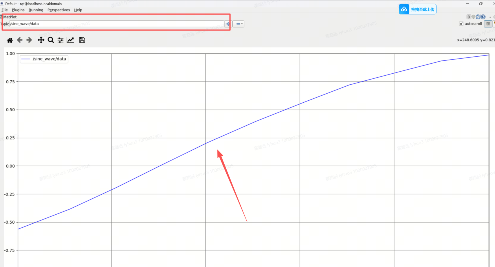
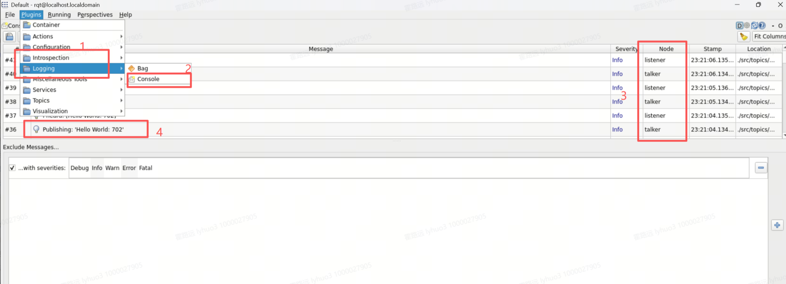
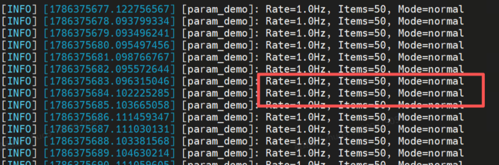

rqt 可视化工具箱：GUI 调试工作台
对着终端敲 echo、grep、awk，是命令行侠的浪漫，但效率有天花板。rqt 是 Qt 插件化调试工作台：图形看拓扑、曲线看波形、图像看画面——把"查/看"两件事从终端搬进 GUI。本课讲清插件架构原理，用本机真实话题（底盘电压、相机图像）实战核心插件。
目标本课学完，你应该能做到
能阐述 rqt 基于 Qt 插件框架的设计原理——为什么把多个调试工具整合为可组合面板，比"开一堆独立窗口"在机器人开发中更高效。
能熟练用 rqt_graph 画节点-话题-服务拓扑诊断通信链路，用 rqt_plot 实时绘制任意话题字段的曲线看时序趋势。
能用 rqt_console 按 DEBUG/INFO/WARN/ERROR/FATAL 过滤日志快速定位问题节点，用 rqt_reconfigure 不重启节点调参。
把"先 rqt_graph 定位拓扑异常，再 rqt_plot 确认数值趋势"当成标准调试流程，用在后续实验里。
rqt_graph 的读图能力——它能把"我以为连上了"和"实际没连上"一眼区分开。难点：rqt_plot 采样率不足会产生"假波形"（奈奎斯特），别把显示问题误判成数据问题。
01问题引入：黑盒调试的困局
ros2 topic echo / hz、EXP-05 的 ros2 node info、EXP-10 的 ros2 param set——你已经用熟了这一串命令行工具。本章做的事只有一件：把它们全部装进同一个图形界面，调试时不再开十几个终端。小车导航突然停了，报错只有一句 "no feedback from controller"
开 5 个终端分别 echo 各话题、grep 日志——10 分钟过去还没看清链路
节点关系是什么？哪条话题断了？波形哪里跳变了？终端很难一眼回答
rqt_graph 一张图看拓扑，rqt_plot 一条曲线看跳变，3 定位断点
02核心原理：插件化架构为什么好用
rqt 启动时扫描 /opt/ros/humble/share/rqt_* 下声明的插件入口，动态加载进菜单。写一个自己的 rqt 插件，就能把私有调试界面挂进官方工具箱。
所有插件共用 rqt 进程内的 ROS 节点——你在 rqt_graph 里看到的图，和 rqt_plot 订阅的是同一套话题系统，无需逐个工具重新连接。
窗格停靠、插件组合、参数设置可整体存成 Perspective。排查导航问题存一个、调试串口存一个，切换工作场景一键还原，团队共享布局文件保持排查口径一致。
rqt 定位是"快速看"：graph 3 秒找断点、plot 秒级看趋势。脚本化/CI 场景仍回 CLI（ros2 topic echo / ros2 param）。GUI 提效率，CLI 保可复现，别二选一，要各司其职。
| 任务 | 命令行做法 | rqt 做法 | 效率差距 |
|---|---|---|---|
| 找断流话题 | 逐个 topic echo + 人肉比对 | rqt_graph 看箭头有无，右上刷新 | 秒级 vs 分钟级 |
| 看波形趋势 | echo 刷屏心算 | rqt_plot 输入 /topic/field 直接画线 | 直观 vs 不可行 |
| 看相机画面 | echo 打印整帧二进制，毫无意义 | rqt_image_view 选话题即见实时画面 | 可视化 vs 不可行 |
| 看复杂消息字段 | echo 分层嵌套结构滚动难对齐 | rqt_topic 树形展开逐字段查 | 结构化 vs 刷屏 |
ros2 topic echo /rosout + set_logger_levels 服务），参数改动交给 ros2 param set——它们本机现成、可脚本化、更好复现。rqt 专注做它最值的两件事：看图（拓扑/波形/图像）和看数据。
03动画：同一系统，四双眼睛
动画：中央是运行中的 ROS2 系统，rqt_graph（拓扑）、rqt_plot（波形）、rqt_image_view（图像）、rqt_topic（数据）四个插件像四台投影仪，把同一套节点/话题数据各自投射成不同视图，共享同一 ROS 上下文。
04原理专题：五大核心插件逐个拆
Plugins → Introspection → Node Graph。椭圆=节点、矩形=话题、箭头=数据流。Hide Debug 勾上，/parameter_events、/rosout 消失，主链路一目了然。右上 Refresh 手动刷新——节点动态变化时不会自动重绘。
Visualization → Plot。路径必须写全 /topic/field，如 /car1_base_driver/battery（String 消息不可绘）。"加号"按钮从话题树选字段最稳；还支持数学表达式 /a/data + /b/data 合成曲线。
Visualization → Image View。订阅 sensor_msgs/Image，把相机画面直接显示在窗口里——比 ros2 topic echo 打印二进制流实用一万倍。左上角下拉框切换话题，是感知调参的"必演"窗口。
echo 的 GUI 版：话题列表带频率/类型，点开分层展示消息字段，位姿/多传感器嵌套结构不用在刷屏流里对齐看。适合"看一眼就走"的快速检查。
Logging → Bag。时间轴拖动、勾选话题、字段绘图、导出 CSV——录包数据分析的 GUI 入口，与 CLI 的 ros2 bag info/play 互补（详见 EXP-16）。
ros2 run rqt_console 的场景可用 ros2 topic echo /rosout + grep 覆盖；动态改级别用标准的 ros2 service call /<node>/set_logger_levels rcl_interfaces/srv/SetLoggerLevels（前提是日志服务节点在线）——本机现成、可写进脚本、比 GUI 更好复现。
ros2 topic hz 的意义：先确认采样率，再信波形。
05命令精讲：启动方式三连
# 方式一：启动完整工作台（自带菜单可再开任意插件） $ rqt # 方式二：直启单个插件（省去菜单导航，脚本常用；本机均已安装） $ rqt_graph $ rqt_plot $ rqt_image_view $ rqt_topic # 方式三：带参数启动（指定绘图话题，省手打） $ ros2 run rqt_plot rqt_plot /car1_base_driver/battery $ ros2 run rqt_image_view rqt_image_view
rqt_plot 依赖 /opt/ros/humble/bin 在 PATH 里（有些环境没配好）。ros2 run rqt_plot rqt_plot 走 ROS2 的包解析机制，只要包装了就能跑，还能顺带传参数——这是指导书里推荐的稳妥写法，本机实测均可用。
补充一句原理：set_logger_levels 不是每个节点凭空自带的，它由 日志服务节点（如 logger_level_service，或 rclpy/rclcpp 中开启 enable_logger_service=True）统一提供；只有该服务在线，下面这条命令才有对象可调。同理，ros2 topic echo /rosout 要求发起节点以 DEBUG 级别重新发布日志——先提级，才看得见。
查一个节点当前有哪些 logger、什么级别：
ros2 node list # 先拿节点名，如 /car1_base_driver ros2 service list | grep logger
等价于 rqt_logger_level 的拖拽操作，但可写进脚本、可在 ssh 里跑：
ros2 service call /car1_base_driver/set_logger_levels \ rcl_interfaces/srv/SetLoggerLevels \ "{levels: [{logger: '', level: 10}]}" # 10=DEBUG
✔ 想抓 `timeout` 相关上下文？直接用 `ros2 topic echo /rosout | grep -i timeout` 代替 rqt_console 的 GUI 过滤。
ssh -X iflytek@10.1.134.9 rqt # 窗口经 X11 转发到本机显示
10.1.134.9 上的 rqt）与"显示"（你笔记本的屏幕）分离，ssh -X 把远端的 X11 流量加密隧道转发回本地 X Server 显示。前提：客户端（你的笔记本）必须装有 X server——
· Linux 桌面：自带，开箱即用；
· Windows：装 VcXsrv 或 Xming，启动后再
ssh -X；
· macOS：装 XQuartz；
· Wayland / 纯 headless 环境要么改用 VNC，要么直接在带显示器的机器上跑。
06实操 A：graph + plot 看真实底盘电压
不写一行代码、不下载任何额外包——本机已经有一个真实在跑的数值话题：/car1_base_driver/battery（底盘电池电压）。用它看清"拓扑 + 波形"两双眼睛怎么配合。
ros2 topic list | grep car1 找到电压话题，ros2 topic hz 看它是不是活的
rqt_graph → 勾 Hide Debug → 找到 car1_base_driver 节点到 /battery 的发布箭头
ros2 run rqt_plot rqt_plot /car1_base_driver/battery → 看到电压基线滚动
CLI 里 ros2 topic echo 报的数，和曲线末端对齐——两种视图说的是同一件事
ros2 topic list | grep car1 ros2 topic info /car1_base_driver/battery --verbose ros2 topic hz /car1_base_driver/battery
ros2 run rqt_graph rqt_graph
话题名直接跟在插件名后面传入即可（这就是"方式三"的用法）：
ros2 run rqt_plot rqt_plot /car1_base_driver/battery # 或先开空窗口，再在左上角输入框粘贴 /car1_base_driver/battery
✔ 拖动马上下电/通电（或让小车跑起来），曲线会实时抬头或下压——这就是"看着真实物理量调"。
ros2 topic echo /car1_base_driver/battery --once
✔ 两种视图交叉验证是 rqt 的正确打开方式：图看关系与趋势，CLI 拿精确值。
ros2 node list、ros2 topic hz），不要盯着不动的曲线瞎猜。07实操 B：rqt_image_view 看图 + 命令行管日志
ros2 topic list | grep image 找到相机话题，确认它是 sensor_msgs/Image
rqt_image_view 选话题 → 实时画面出现，用它判断曝光/卡顿/掉帧
不进 GUI：echo /rosout 过滤 + service call 动态提级，抓完调回
把 graph+plot+image_view 摆好 → Perspectives → Save As，下次一键还原
ros2 topic list | grep -i image ros2 topic info /camera/color/image_raw --verbose ros2 topic hz /camera/color/image_raw
这是感知调参最直观的一步——改曝光/改分辨率，肉眼立刻能判断效果：
ros2 run rqt_image_view rqt_image_view
✔ 想同时看彩色+深度？再开一个 rqt_image_view，各选一路话题并排摆放。
# 过滤：只留 camera 相关的 WARN 以上 ros2 topic echo /rosout | grep -E "camera|timeout" # 动态提级（等价 rqt_logger_level，本机现成）： ros2 service call /camera_node/set_logger_levels \ rcl_interfaces/srv/SetLoggerLevels \ "{levels: [{logger: '', level: 10}]}" # 抓完调回 INFO（level: 20），别让 DEBUG 刷屏影响性能
rqt # 打开工作台，逐一把 graph/plot/image_view 拖进同一窗口 # Perspectives → Save As → 命名 car_debug → 下次启动直接选它
| 坑 | 症状 | 解法 |
|---|---|---|
| 无显示环境 | Could not connect to display | 本机装 X server（Windows: VcXsrv；macOS: XQuartz）后 ssh -X iflytek@10.1.134.9；或改 VNC |
| graph 图是空的 | 一个节点椭圆都没有 | 右上 Refresh；确认 rqt 与系统同源（都 source 了 humble） |
| plot 曲线出不来 | 提示不能绘制 | 路径写到字段级 /topic/field；String 类型换数值话题 |
| image_view 全黑 | 窗口开了但没画面 | 下拉框没选对话题；或话题本身没数据（先用 ros2 topic hz 验活） |
| 布局每次重配 | 窗口仍回老样子 | Perspectives → Save As 存盘，启动时选择预设 |
📸 指导书实操与现象截图（3 图）



08注意事项与验收
- 验收 1：rqt_graph 勾 Hide Debug 后能一眼报出主链路的发布/订阅关系
- 验收 2：用
ros2 run rqt_plot rqt_plot /car1_base_driver/battery画出真实电压曲线，并解释"字段级路径"的原因 - 验收 3：rqt_image_view 打开相机话题看到实时画面，能说出它与 ros2 topic echo 的本质区别
- 验收 4：用
ros2 service call .../set_logger_levels完成一次动态提级并调回，说清 level 数值含义 - 验收 5：布局存成 Perspective 并重启 rqt 还原成功
- 验收 6：能说出 GUI 与 CLI 各自的适用边界（快速看 vs 可复现），并各举一例
grep -E "node_a|node_b" 做多关键词 OR 收窄；反过来若怀疑"问题起因在 INFO 里"，就先把 grep 放宽、再顺时间线往上游找。提级后一定记得调回，DEBUG 刷屏会拖慢实时节点。09本课总结
rqt 本体只是 Qt 工作台，多个核心插件共享同一 ROS 上下文，Perspectives 保存布局。
graph 看结构、plot 看波形、image_view 看画面、topic 看数据、bag 看回放。
日志过滤、动态提级用 ros2 topic echo /rosout 与 set_logger_levels 服务——本机现成、可脚本化、更好复现。
曲线冻结别只信 plot，拓扑断流回 graph——GUI 给速度，CLI 给确定性，两边互相印证。
① 想只看"planner 节点输出的 WARN 以上日志"，用 ros2 topic echo /rosout | grep 该怎么组合？若 WARN 被 INFO 淹没，除了 grep 关键字还有哪些策略？
② 要在 rqt_plot 里画小车的 XY 轨迹（不是"x随时间"曲线），数据源是 /odom 的 position.x 和 position.y——路径该怎么填？（提示：plot 支持表达式，想想两条曲线怎么合成坐标平面上的点。）